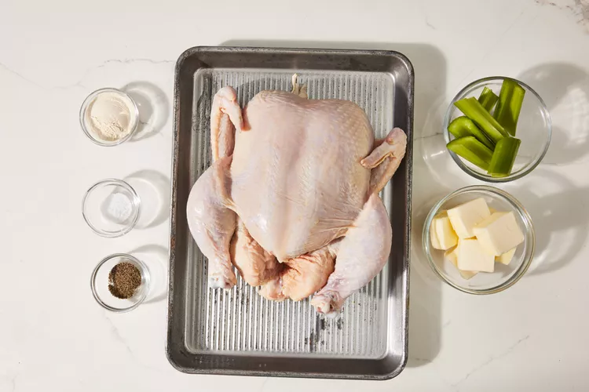
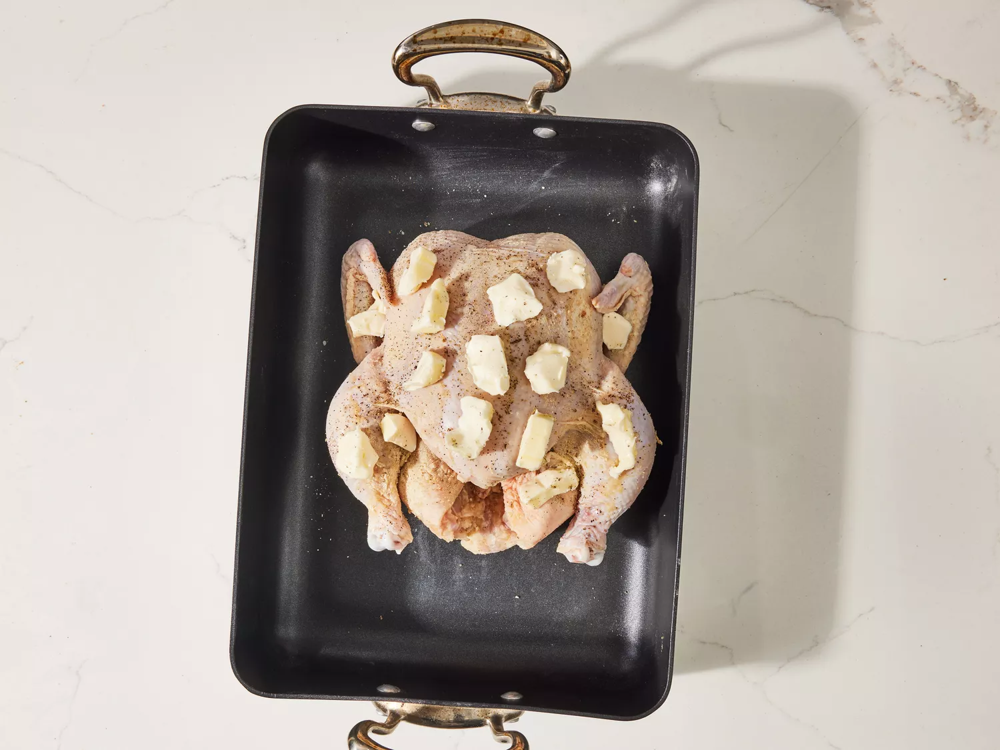
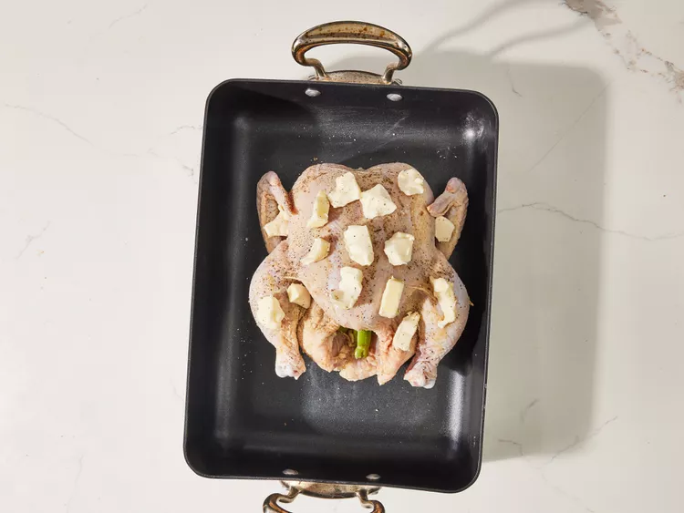
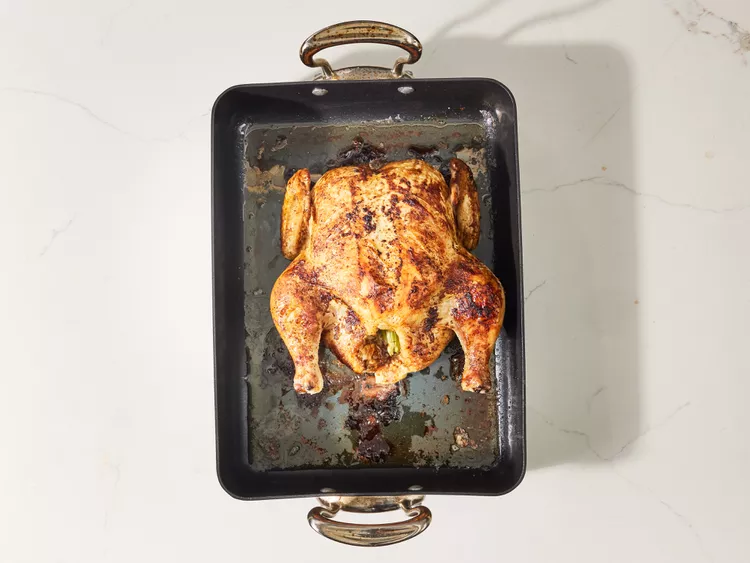

Juicy Roasted Chicken

This roasted chicken is perfectly seasoned and cooked just the way my grandmother used to make it. The method used in this recipe results in the juiciest chicken! We loved to nibble on the celery after it was cooked.
THe Estimate Time of the Process
- Prep Time: 15 mins
- Cook Time: 1 hr 15 mins
- Additional Time: 15 mins
- Total Time: 2 hr
- Service: 6
- Yield: 1 (3-pound) roast chicken
WHY YOU WILL LOVE THIS RECIPE
- Roasted chicken never fails to impress, but it's surprisingly simple to make.
- This recipe turns out juicy meat and crispy skin every time, with just a few basic ingredients and steps.
- It’s perfect for Sundays, family dinners, or anytime you want a comforting, no-fuss meal, whether you're new to cooking or have been doing it for years.
Roasted Chicken Ingredients
These are the ingredients you'll need to make the juiciest roast chicken recipe of your life:
- Chicken: This recipe starts with a 3-pound whole chicken. If your bird is larger or smaller, you'll need to adjust the recipe.
- Seasonings: This roasted chicken is simply seasoned with salt, black pepper, and onion powder.
- Butter: Butter locks in moisture and gives the seasonings something to adhere to.
- Celery: Stuff the chicken cavity with celery for subtle vegetal flavor. Plus, the celery will release even more moisture as the chicken cooks.
Roasted Chicken Tips
"Roasting a whole chicken at home requires almost no effort and very few ingredients," says culinary producer Nicole McLaughlin (a.k.a. NicoleMcMom). Here are a few of her favorite tips for perfect roasted chicken every time:
- The most important thing to know, according to Nicole: "Dry skin is crispy skin." Make sure you get the skin nice and dry with a paper towel before you season the chicken.
- "Don't forget to season the inside as well as the outside," says Nicole, who recommends also getting under the skin with butter for extra flavor.
- If you don't have a roasting pan, that's totally fine. Nicole prefers using a simple baking sheet with a rack on top.
- To prevent the wings from burning during the long roasting process, Nicole tucks them under the bird before sticking the chicken in the oven.
- Nicole prefers to roast a whole chicken at a higher temperature for a shorter time to get a crispier skin. Preheat the oven to 425 degrees F (220 degrees C). Bake prepped chicken uncovered until no longer pink at the bone and the juices run clear, about 50 to 60 minutes.
How to Store Roasted Chicken
Allow leftover roast chicken to cool completely before storing in an airtight container in the refrigerator for up to 3 to 4 days. Reheat thoroughly in the oven at 325 degrees F (165 degrees C) or in the microwave until heated through. For best results, add a splash of broth or water before reheating to help retain moisture.
Ingredients
- 1 (3 pound) whole chicken, giblets remove
- salt and black pepper to taste
- 1 tablespoon onion powder, or to taste
- ½ cup butter
- 1 stalk celery, leaves removed
Instructions
-
- Gather all ingredients. Preheat the oven to 350 degrees F (175 degrees C).

-
- Place chicken in a roasting pan; season generously inside and out with onion powder, salt, and pepper. Place 3 tablespoons of butter in chicken cavity; arrange dollops of remaining butter on the outside of chicken.

-
- Cut celery into 3 or 4 pieces; place in the chicken cavity.

-
- Bake chicken uncovered in the preheated oven until no longer pink at the bone and the juices run clear, about 1 hour and 15 minutes. An instant-read thermometer inserted into the thickest part of the thigh, near the bone, should read 165 degrees F (74 degrees C).

-
- Remove from the oven and baste with drippings. Cover with aluminum foil and allow to rest for about 30 minutes before serving.

Click for more recipes